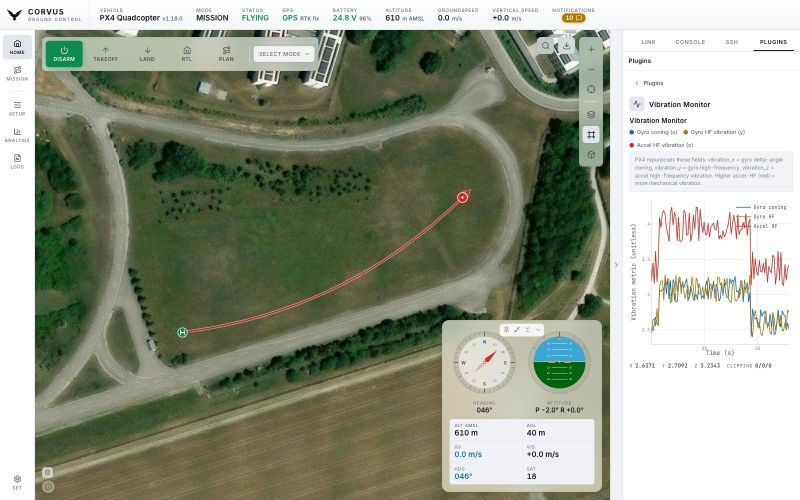

Tools
Plugins
The TOOLS tab in the side workspace is an extension point. A plugin adds its own view there without a fork and without touching the rest of the app. Three ship with Corvus, and a folder dropped into your plugin folder adds your own.


Vibration Monitor
A live graph of gyro coning, gyro high frequency and accelerometer high
frequency vibration, with the cumulative clipping counters beside it. While
it is open it asks the autopilot to send VIBRATION more often,
and puts the default rate back when you close it.
SSH Launcher
A shelf of buttons for the programs you start before a flight. Each button carries its own saved SSH connection, folder and command, so the mission script, the video pipeline and the log recorder are three presses rather than three trips to a terminal. Add, rename, edit and remove buttons in the plugin itself; they are saved and there again at the next launch.
How a button runs its program
- In its own SSH session. Pressing the button again runs the program again in that same terminal: one run under the last, in one scrollback, with nothing thrown away in between. (It is a real shell: if the last program is still running in the foreground, what you send goes to it, just as if you had typed it. Press Ctrl+C first, or let it finish.)
- The arrow beside a button opens that session's terminal, a window you can move, resize, maximise and put away. Only the arrow opens it: pressing the button starts the program without throwing a window at you, which matters when four of them go up on the pad. Pressed before the button, the arrow opens the terminal on a plain shell, and the button then runs the program in it.
- Closing the window with × leaves the program running, and the arrow brings the window back with its scrollback intact.
- A green dot marks buttons that have something running. On those rows the pencil becomes a red stop button: it sends Ctrl+C, gives the program a second to finish, then closes the session, which ends the program and the connection. Stop a button before editing it.
Turn Run in a terminal off for a program that has to outlive
Corvus itself. It is then started with nohup and detached, with
nothing to watch and nothing to stop from here.
Connections
A button does not need a connection set up beforehand. The connection list in
its editor ends with New connection…, which asks for host,
user, password and key file right there, so a shelf can be built on the pad
for a companion computer Corvus has never seen. What you type is saved as an
ordinary SSH connection (it appears in the SSH tab, ready for the next button,
editable and removable), named user@host unless you name it.
The plugin never holds a password. A button names a saved SSH connection, and the backend takes the credentials from there.
Schwalby
A shelf of one press buttons like the SSH Launcher's, for programs on the ground station as well as on the aircraft. When you create a button, the Local / SSH switch at the top of its settings decides where it runs:
- Local
- Runs the command on this computer, as you, in your own login shell. In a terminal it gets a window of its own like any other (arrow, pin, disconnect, Ctrl+C, and the stop button on its row); in the background it starts without one. Either way it is stopped when Corvus closes, so nothing is left running after you shut down. Only this computer can start anything locally, even when Corvus is reachable from the network. On Windows a local terminal is not available and the switch says so; local background buttons work there too.
- SSH
- Runs it on a saved SSH connection, exactly as an SSH Launcher button does, including New connection… and the
nohupbackground mode.
Each row says where it runs. Moving a running button to the other side (or to another connection) asks first and closes its old session, so the next press can never land on the wrong machine. Schwalby and the SSH Launcher are separate plugins with their own buttons and settings; neither touches the other's.
Adding your own
Plugins are folders. Corvus reads two places:
| Where | What it is |
|---|---|
~/.corvus/plugins (%USERPROFILE%\.corvus\plugins on Windows) | Yours. Survives updates. |
plugins/ inside the application | The ones that ship with Corvus, including the three above. Replaced by an update. |
Settings, Plugins, Open plugin folder opens the first one in Finder, Explorer or your file manager, and lists what Corvus found. Drop a folder in, restart, and the plugin is on the TOOLS tab. A plugin in your folder with the same id as a shipped one replaces it, so you can patch one without editing inside the app bundle.
Folder layout
~/.corvus/plugins/
my-plugin/
plugin.json
my-plugin.js
my-plugin.css (optional)plugin.json
{
"id": "my-plugin",
"name": "My Plugin",
"icon": "puzzle",
"description": "What it does, one line.",
"version": "1.0.0",
"order": 100,
"scripts": ["my-plugin.js"],
"styles": ["my-plugin.css"]
}| Key | Meaning | Default |
|---|---|---|
id | The plugin's identity. A plugin in your folder with a shipped plugin's id replaces it. | the folder name |
name | The title on its card. | |
icon | Any Lucide icon name. | |
description | One line under the title. | |
version | Your plugin's own version. | |
order | Where the card sits in the grid, lower first; ties are broken by name. | 100 |
scripts | JavaScript files to load, in order. | <id>.js |
styles | Stylesheets to load. | none |
The script
The script registers itself as it loads. It gets a container to build into
and a small api: live telemetry, the MAVLink console,
notifications, JSON requests to the backend, and its own saved settings.
Corvus.plugins.register("my-plugin", {
name: "My Plugin",
icon: "puzzle",
description: "What it does, one line.",
init: function (containerEl, api) { /* build your UI */ },
destroy: function (containerEl) { /* tear it down again */ },
});
The full api is documented at the top of
src/js/plugins.js, and the manifest in
corvus/plugin_registry.py. The shipped plugins are complete
worked examples that go through exactly this path. Copy one and start from
there:
plugins/ssh-launcher: a form, saved settings and a backend call.plugins/schwalby: the same, with a control and a stylesheet of its own.plugins/vibration: a live chart on the telemetry stream.
A plugin's settings are kept in its own file,
~/.corvus/plugins/<id>/config.json, not in the main
config. A plugin that fails to load costs itself and nothing else: the rest
of the app, and the other plugins, come up regardless.
A plugin is ordinary JavaScript running in the app's own page, and the launchers run whatever command you give them as the account you point them at. Read a plugin before you drop it in, exactly as you would a script you were about to run yourself.
Taking a plugin to another station
Switch on the plugin's Files in Settings, Export and import, Export settings. The file then carries the plugin's folder (scripts, styles, images, up to 4 MB) as well as its settings, and an import installs it into the plugin folder there, replacing a copy with the same id and keeping that copy's settings unless the file's are imported too. Install plugin files only from a settings file you trust.